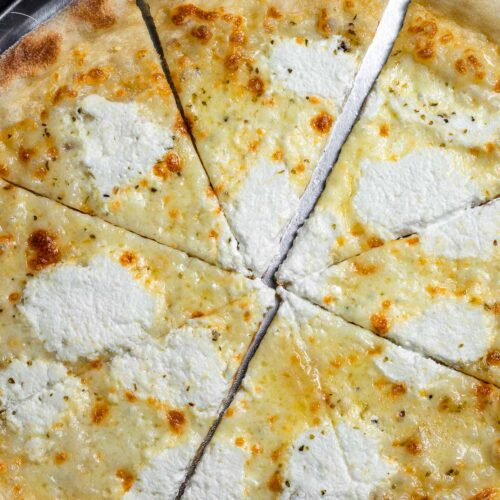

Pizza

Description
This recipe uses simple pantry and refrigerator staples and whipping up a batch couldn't be easier.
It is made of milk, salt, pepper, garlic, and parmesan cheese. The butter and flour serve to thicken the sauce
and create a rich alfredo sauce
Ingredients
Sauce: This pizza doesn’t use a traditional pizza sauce (one reason it’s called a white pizza) but instead,
you brush on a garlic and rosemary infused olive oil. All you need for it are those three ingredients – olive oil,
garlic and rosemary. I use fresh rosemary, but if you want to use dry, remember that dry rosemary is pretty strong.
You’ll only need about 1/4 teaspoon and you’ll want to make sure you chop it finely.
Cheese: For your three cheeses, you’ll need ricotta, mozzarella and parmesan.
I first fell in love with ricotta on pizza when I made this Butternut Squash and Sage Pizza.
And now, I really just want to put it on everything! For the mozzarella and parmesan, I like to
shred them myself, as they will melt better that way.
Topping: To top it off, I add just a sprinkling of red pepper flakes. You don’t need much –
just enough to give a little bit of a kick. (Although I have to admit that if I were making this just
for myself, I’d probably lay it on heavier, because I love the spice!)
Steps
Step 1: Combine your olive oil, garlic and rosemary, and brush that on your crust that has been rolled out.
Step 2: Dollop the ricotta over the top, then gently spread.
Step 3: Sprinkle on the mozzarella cheese.
Step 4: Then sprinkle on the parmesan cheese.
Step 5: Top with the red chili flakes.
Step 6: Bake the pizza until the crust is golden and the cheese is melted.